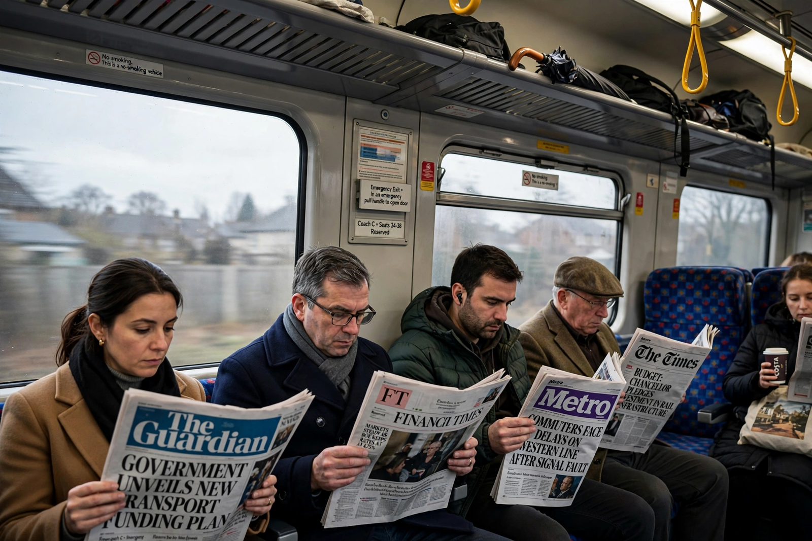

Top stories
The stories Britain is waking up to, from the people's paper

The Daily Mirror, founded in 1903 and owned by Reach plc, is Britain's Labour-supporting tabloid: campaigning news, big sport, showbiz through its 3am column tradition, and the Pride of Britain awards it founded.
News
UK and world news with a campaigning edge
The Mirror's news file leads its front page.
Politics
Westminster from the left
Labour politics and the cost-of-living fight.
Sport
Football-first back pages
Premier League, racing and boxing.
Money
Help with bills and benefits
Consumer advice for hard times.
Latest & most read
- Pride of Britain: the awards the Mirror built
- The campaign: the Mirror takes up a cause
- Football: last night's talking points
- 3am: the showbiz column's latest
About
Background on this news organisation: Wikipedia article.